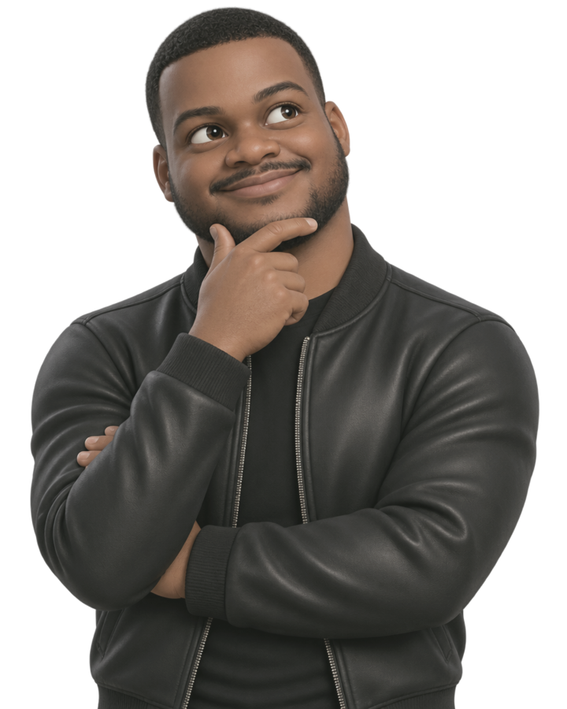

Graphic and multimedia designer
I trained as an accountant, with an MBA and an MSc in business management. I have designed for businesses since 2018.
hello@michaelesema.com
Portfolio, November 2026
3D character generated from my photograph.
Sarah Bellus. Brand identity, print, website. 2026.
What I did
A serving spoon stands in for the dot of the i. Aubergine and cream with a single orange, taken from the colour of jollof. The same mark went onto the menu, the food photos and the website.
What I delivered
The monogram, a printed menu, food photography treated with the mark, and a one-page website.
Scene: mock-up. The artwork is mine, the setting is generated.